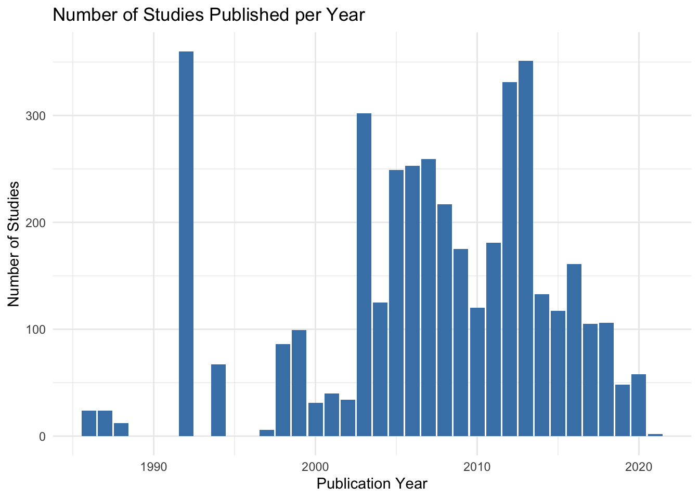
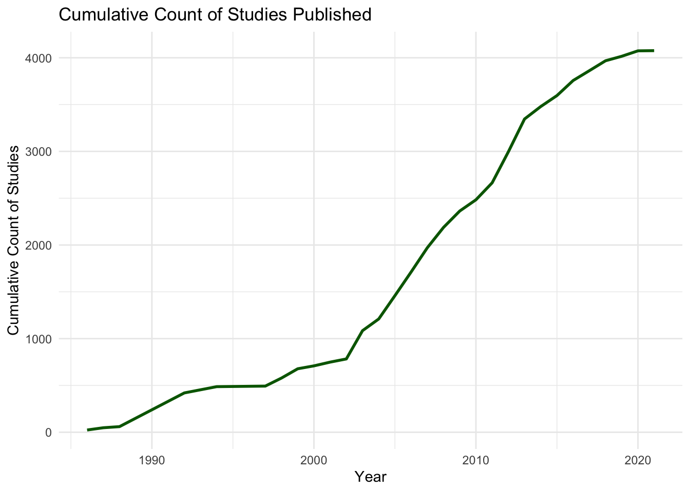
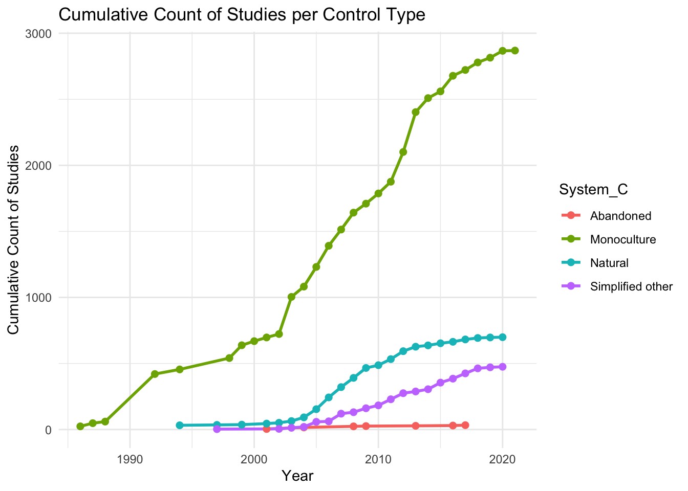

To illustrate temporal analysis in R, we will use the ggplot2 and tidyverse packages to create both cumulative sum and count graphs.
Below is an example of how to plot these two types of graphs using fictional publication data.
# Install necessary packages (if not already installed)
# install.packages("ggplot2")
# install.packages("tidyverse")
# Load necessary libraries
library(ggplot2)
library(tidyverse, warn.conflicts = FALSE)
# Merge the outcome dataset with metadata
# TAB should be your combined dataset, with relevant variables
TAB <- left_join(Outcome, Meta_Data)## Joining with `by = join_by(ID, Authors, Title, Year)`This graph visualizes the count of different studies published each year. It uses a bar graph to display the number of studies per publication year, making it easy to compare across years
# Count Graph
count_data <- TAB %>%
group_by(Year) %>% # Group data by publication year
summarise(Count = n(), .groups = "drop") # Count studies per year
# Plot the count graph
ggplot(count_data, aes(x = Year, y = Count)) +
geom_bar(stat = "identity", fill = "steelblue") + # Create a bar graph
labs(title = "Number of Studies Published per Year",
x = "Publication Year",
y = "Number of Studies") +
theme_minimal() # Use a minimal theme for clarity
This graph displays the cumulative count of studies published over the years. It helps visualize how the total number of studies increases as time progresses.
# Cumulative Sum Graph
cumulative_data <- count_data %>%
arrange(Year) %>% # Ensure data is sorted by year
mutate(Cumulative = cumsum(Count)) # Calculate cumulative count
# Plot the cumulative sum graph
ggplot(cumulative_data, aes(x = Year, y = Cumulative)) +
geom_line(size = 1, color = "darkgreen") + # Create a line graph
labs(title = "Cumulative Count of Studies Published",
x = "Year",
y = "Cumulative Count of Studies") +
theme_minimal() # Use a minimal theme for clarity
This graph shows the cumulative count of studies based on different crop types. It allows for comparison of study trends across various crop systems.
# Grouped Graph by Crop
grouped_data <- TAB %>%
group_by(Year, System_C) %>% summarise(Count = n(),.groups = "drop") %>%
arrange(Year) %>%
group_by(System_C) %>%
mutate(Cumulative = cumsum(Count)) %>%
ungroup()
# Plot the grouped cumulative count graph
ggplot(grouped_data, aes(x = Year, y = Cumulative, color = System_C, group = System_C)) +
geom_line(size = 1) +
geom_point(size = 2) +
labs(title = "Cumulative Count of Studies per Control Type",
x = "Year",
y = "Cumulative Count of Studies") +
theme_minimal()